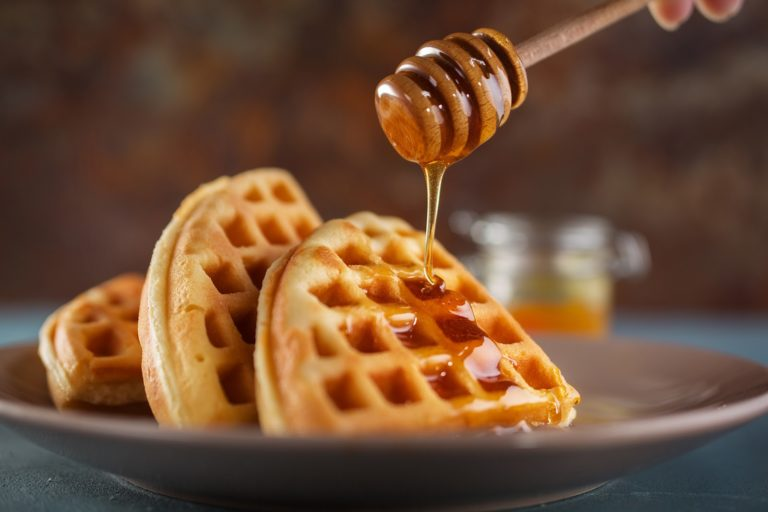

WAFFLE CLÁSSICO

Receita de waffle Clássico
INGREDIENTES
- 2 xícaras (chá) de farinha de trigo
- 2 colheres (sopa) de açucar
- 2 colheres (chá) de fermento em pó
- 1/2 colher (chá) de sal
- 2 colheres de amido de milho
- 3 ovos batidos
- 4 colheres de (sopa) de manteiga sem sal derretida
- 1 e 3/4 de xícara (chá) de leite
- 1 colher de (sopa) de essência de baunilha
MODO DE PREPARO
- Peneire em um recipiente a farinha de trigo, o açucar, o amido, o fermento e o sal. Rserve.
- Em outro recipiente misture os ovos batidos com o leite, a menteiga derretida e a essência de baunilha.
- Despeje sobre a mistura de farinha e rapidamete incorpore os ingredientes.
- Aqueça o aparelho para Waffles, coloque uma concha rasa de massa e espalhe até cobrir o modelo do aparelho, feche a tampa e deixa assar até a massa ficar bem dourada.
- Retire com espátulas de silicone. Sirva com mel, frutas ou geleia
INFORMAÇÕES ADICIONAIS
Você poderá servir Waffles no café da manhã com geleia.